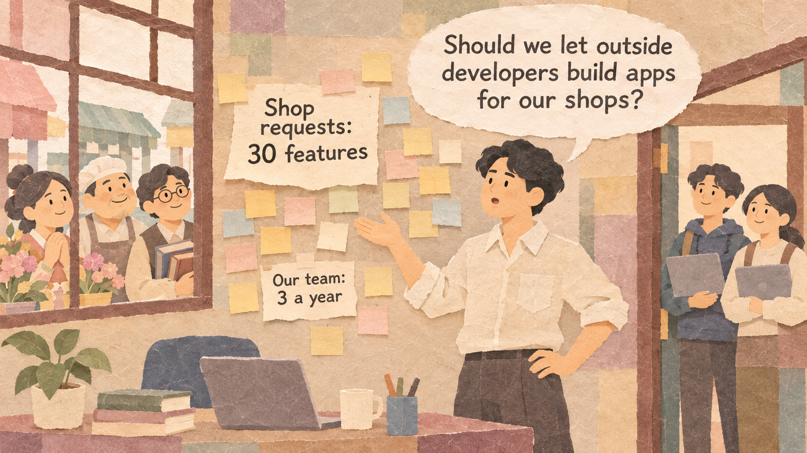
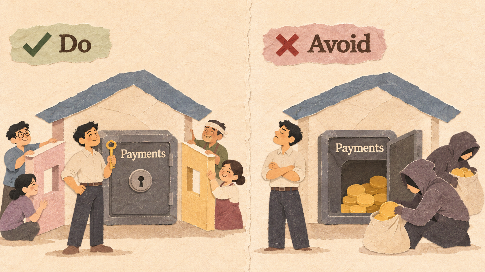
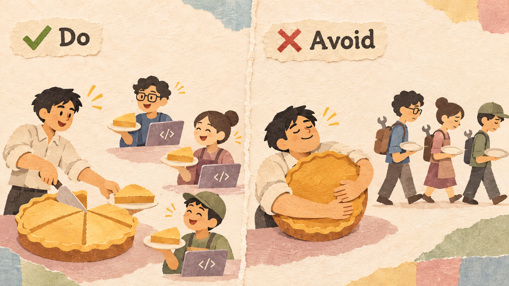
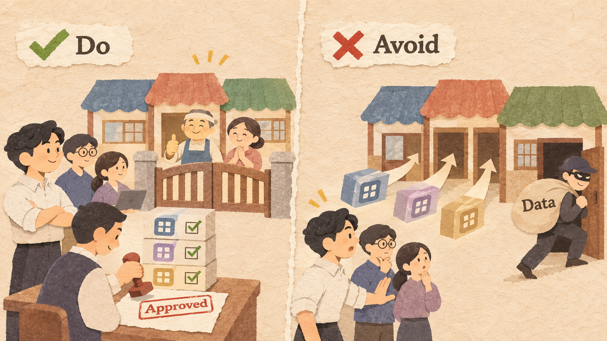
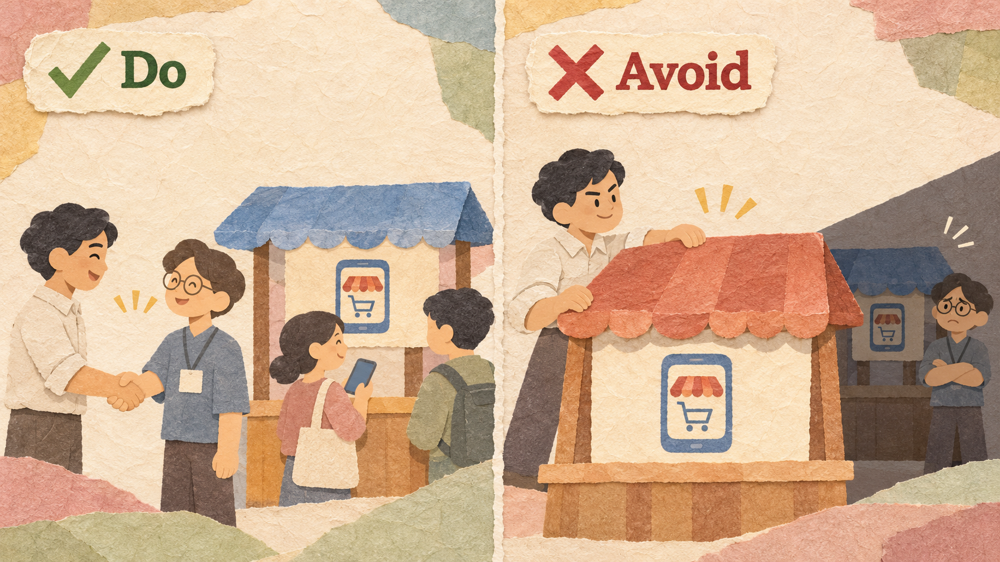

ShopNest lets small shops build their own online store. Arjun is its founder. Shops keep asking for new features, and some leave for bigger store builders.
| SHOPNEST | VALUE |
|---|---|
| Shops using ShopNest | 400 |
| Price per shop | $50 a month ($600 a year) |
| Features shops have asked for | 30 |
| Features the team can build in a year | 3 |
| Shops that left last year, mostly for missing features | 60 |
| Small software companies asking to build add-ons | 12 |
A company opens its product so that outside companies, called partners, can build on it. It becomes a platform: it keeps the core of the product and sets the rules, and many partners add features, apps, or ideas that the company could never build alone. Customers get more choice, partners get customers, and the platform becomes harder to leave.
Let partners add features around your product, but keep the parts that hold your value and customers' trust.

ShopNest opens an API so partners can add delivery tracking, loyalty points, and gift cards. Payments and customer data stay with ShopNest.
Opening everything, including payments and customer data, with no control. Partners can misuse it, and the platform loses its value.
Partners build only if they can earn more than it costs them. Give them customers, tools, and a fair share of the money.

ShopNest keeps 0% of the first $10,000 each partner earns in a year, and 15% after that. Partners also get free test stores.
Taking a large share of every sale, so partners cannot cover their costs. No partners join, and the app market stays empty.
Customers trust the platform, not each small partner. Review apps before they go live, and protect customers' data.

Every app is tested before it appears in the ShopNest app market, and apps can read only the data that a shop allows.
Letting any app in without checks. One bad app that leaks data or breaks stores damages trust in the whole platform.
Partners invest time and money because they trust you. Do not copy their apps, change the rules suddenly, or push them out.

When ShopNest plans a new feature, it tells partners six months ahead and does not copy any partner's app.
Copying the most popular partner app, or cutting partners off with no warning. Other partners stop building.
Shopify helps millions of businesses run online stores. Instead of building every feature itself, it lets outside developers sell apps to Shopify stores through its API and app store. In 2021, Shopify announced that developers would keep all of their first $1 million in app sales each year, and pay only 15% after that, instead of 20% before.
LEGO lets fans post designs for new LEGO sets online. If a design gets 10,000 supporters, LEGO reviews it. If LEGO makes the set, the fan designer receives a small share (1%) of its sales.
For years, outside apps such as Tweetbot and Twitterrific gave people other ways to read Twitter. In January 2023, Twitter suddenly cut these apps off with no warning, then changed its rules to ban them. Twitterrific shut down. In 2023, Twitter also stopped free access to its API and began charging developers (from $100 a month).
In 2014, a personality-quiz app on Facebook collected data from its users and their friends, up to 87 million people. The data was passed to Cambridge Analytica, a political consulting company. After this became public in 2018, the U.S. Federal Trade Commission fined Facebook $5 billion in 2019, partly for failing to control what outside apps did with users' data.
| EXAMPLE | RESULT | THE RULE THAT DECIDED IT |
|---|---|---|
| Shopify App Store | Good | A deal small developers want (Rule 2) |
| LEGO Ideas | Good | Open to fans, with clear checks (Rules 1 and 3) |
| Bad | Pushed out its partners overnight (Rule 4) | |
| Bad | Opened user data without control (Rules 1 and 3) |
Years to build alone = features customers want / features your team builds per year
Value = (customers who stay instead of leaving + new customers) x revenue per customer per year
Platform's share = partner's sales x share %
Partner keeps = partner's sales - platform's share
What you give up to get something you value more.
A promise, written before you start, about which result would make you change your decision.
Example: "If fewer than 10 partner apps are live after six months, we will lower our revenue share."
Six companies plan a move:
| MOVE | ANSWER | WHY |
|---|---|---|
| (a) Outside game studios | Open | Studios add games; the console keeps the store |
| (b) Bank API for budget apps | Open | Apps build on data, with the customer's permission |
| (c) One more cook | Not | Only grows its own work |
| (d) Maps for taxi apps | Open | Taxi apps build on the maps |
| (e) Own chargers only | Not | Closes the product to outsiders |
| (f) Fan toy designs | Open | Open innovation: fans add ideas |
400 shops / $600 a year each / 30 features wanted / 3 built per year / 60 shops left last year
Hire one more developer for $48,000 a year; the team builds 3 more features.
Expect 20 fewer shops to leave and 20 new shops.
API and app reviews: $15,000 once + $500 a month. Expect 20 partners and 25 apps.
Expect 30 fewer shops to leave and 40 new shops. 100 shops buy apps at $10 a month; ShopNest keeps 20%.
Explain an open ecosystem with the words platform, partner, API, core, and revenue share.
Design a revenue share that partners want to join.
Compare building alone with opening an app market and write a decision rule.
Chesbrough, H. W. (2003). Open Innovation. Harvard Business School Press.
Parker, G. G., Van Alstyne, M. W., & Choudary, S. P. (2016). Platform Revolution. W. W. Norton.
CNBC (2021, June 29). Shopify cuts app store fees for developers on first $1 million in revenue.
LEGO. What happens to my product idea after I reach 10,000 supporters?
TechCrunch (2023, January 19). Twitter third-party apps Tweetbot and Twitterrific stop working.
Federal Trade Commission (2019, July 24). FTC imposes $5 billion penalty on Facebook.